Le subimos
el nivel a tu auto.
Sonido de competencia, seguridad con diagnóstico real y electrónica a medida. Un solo taller para el audio, la alarma y todo lo que hay atrás del tablero.
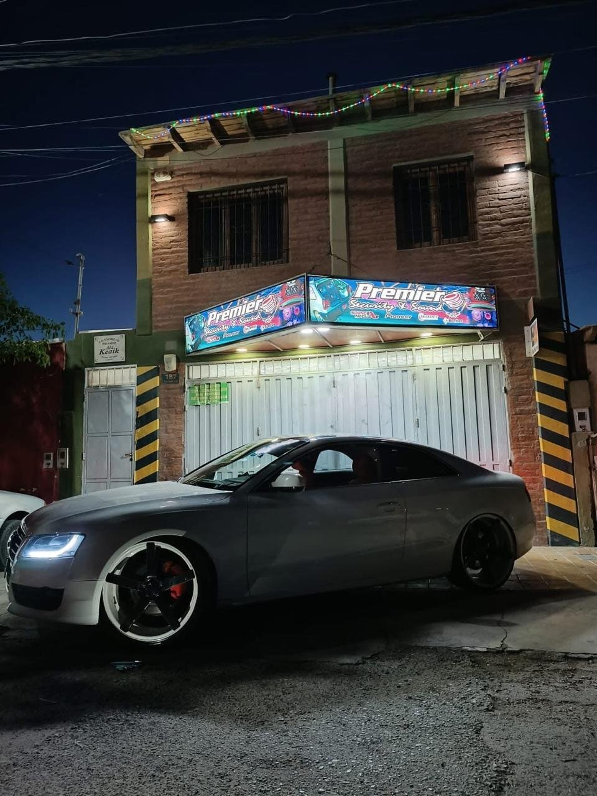
Todo el auto, de la puerta para adentro
Instalamos, diagnosticamos y reparamos. Si tiene un cable o un módulo electrónico atrás, lo tocamos.
Sonido y parlantes
Potencias, subwoofers, parlantes y armado de cajas a medida. Instalación prolija, sin ruidos parásitos y con la ganancia bien calibrada — no a lo bruto.
Pioneer · Taramps · Sound Magus · BomberSeguridad con escáner
Alarmas, cierre centralizado y diagnóstico real con escáner — no adivinamos qué falla, lo leemos directo de la computadora del auto.
Modificación de tableros
Tableros e instrumental a medida: relojería digital, iluminación, agujas y detalles a tu gusto. También cambiamos el tablero sincronizando el BSI y el kilometraje, para que quede como de fábrica.
Reparación de levantavidrios
Motor trabado, cable cortado o vidrio descarrilado — lo diagnosticamos y arreglamos el mismo día en la mayoría de los casos.
Electricidad del automotor
Cortos, cableado, módulos que no responden. Si el problema es eléctrico, lo encontramos y lo dejamos andando.
Reparación de placas
Diagnóstico y microsoldadura sobre las placas de módulos, tableros y equipos que ya nadie más se anima a abrir.
¿Y si es otra cosa?
Seguramente también la hacemos. Contanos qué necesitás y te decimos si podemos — sin vueltas.
Consultar por WhatsAppEquipo de fábrica, no genérico de feria
Esto es lo que sale del taller
Nada de renders ni fotos de catálogo — lo que ves acá es equipo que instalamos o que tenemos en el local ahora mismo.
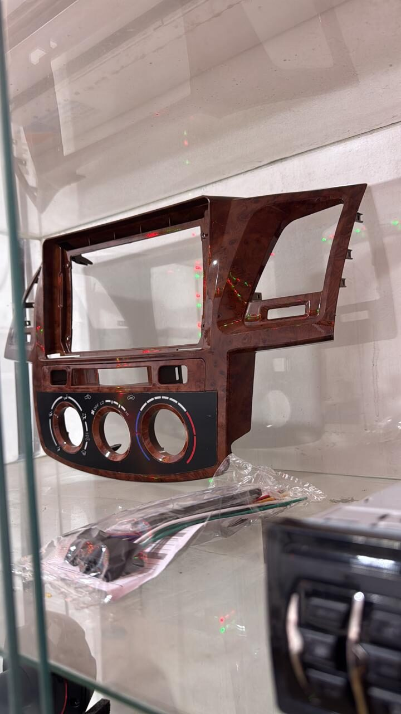
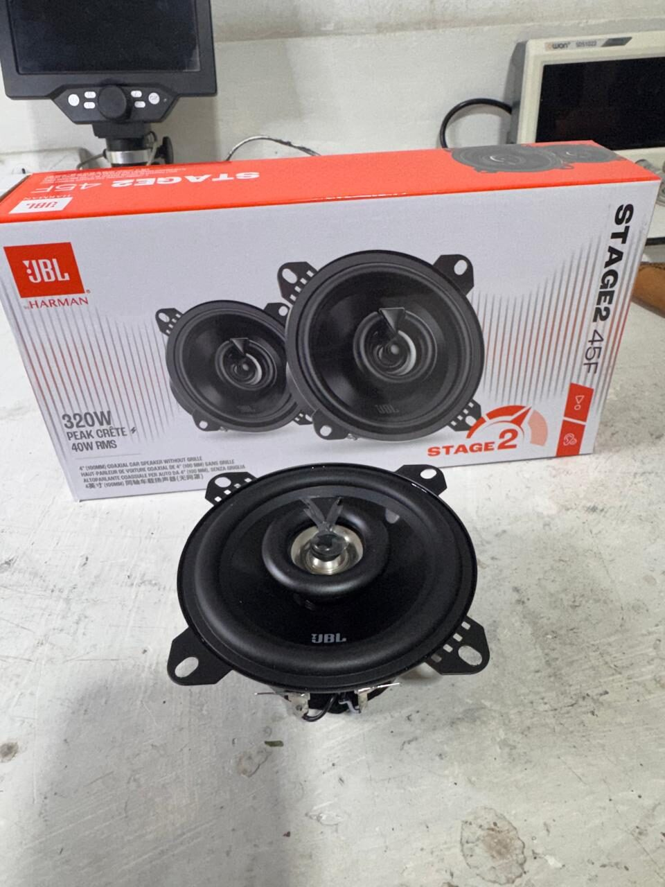
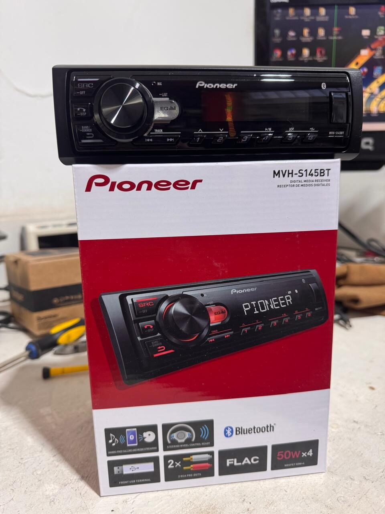
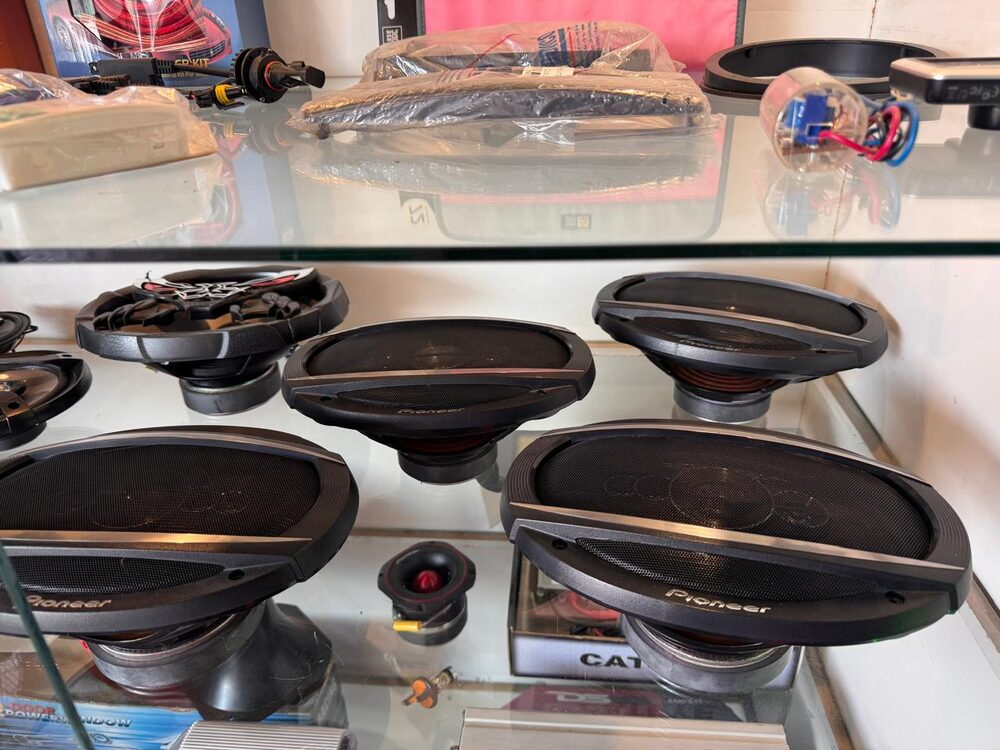
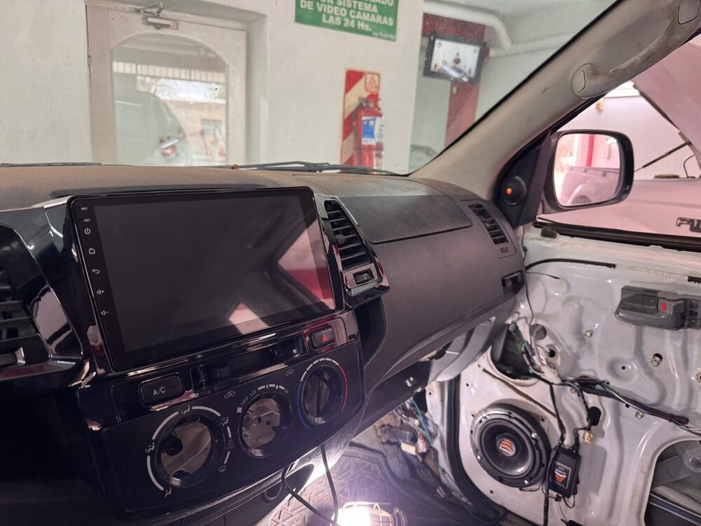
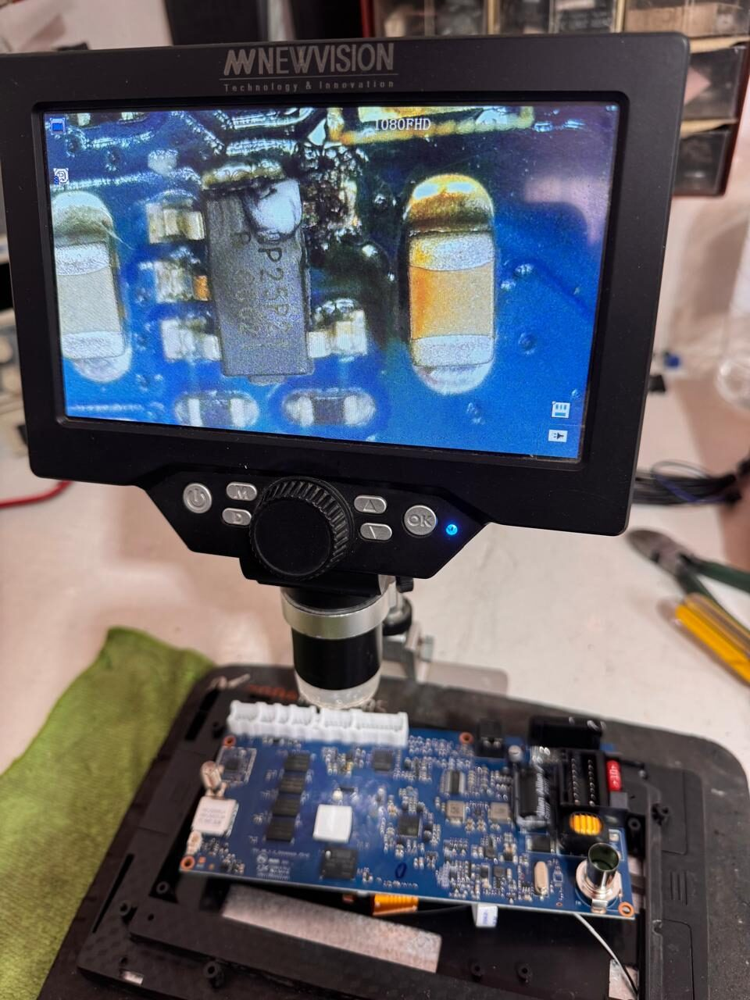
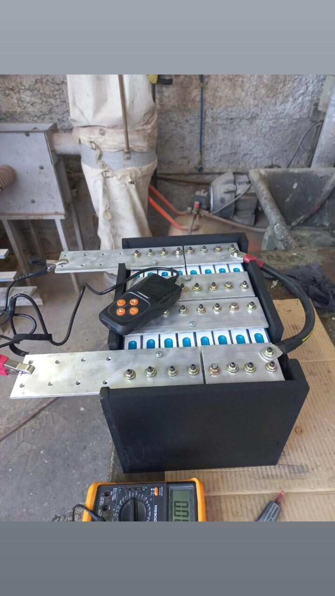
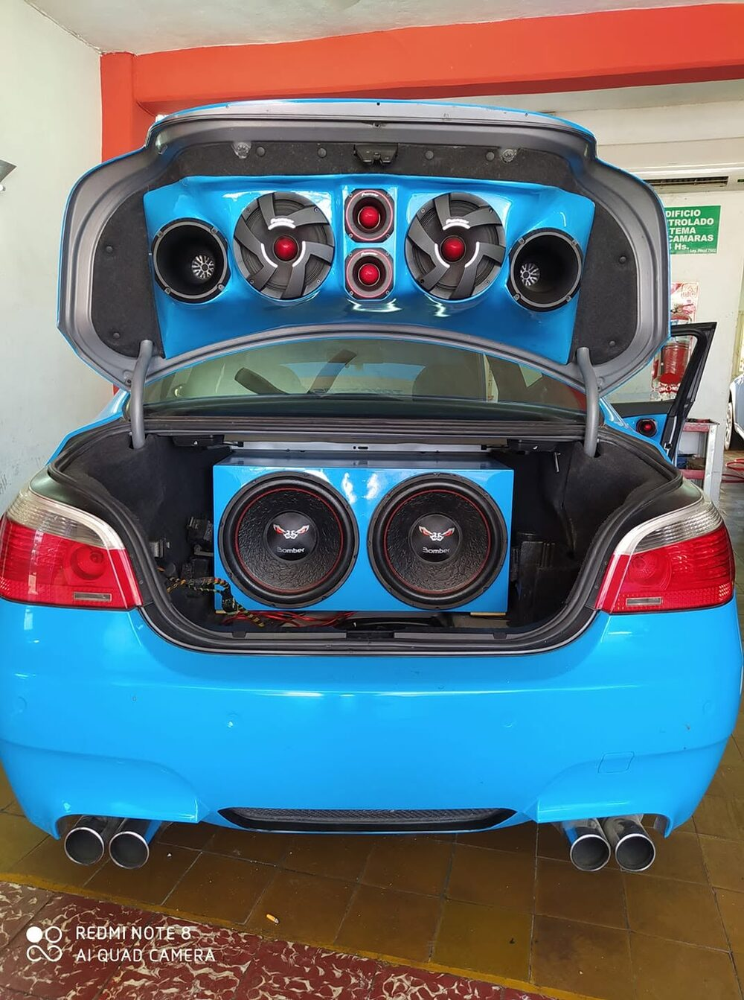
Esto no lo decimos nosotros, lo dice el podio, CAMPEON DEL MUNDO EN CARD AUDIO
GANADOR DEL PREMIO MERCEDARIO POR 4ª AÑO CONSECUTIVO.
Competimos con nuestras propias instalaciones en torneos de sonido y salimos primeros. No es una frase de marketing, son medallas de verdad.
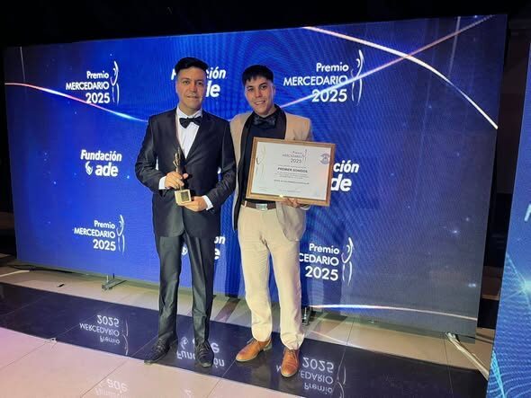
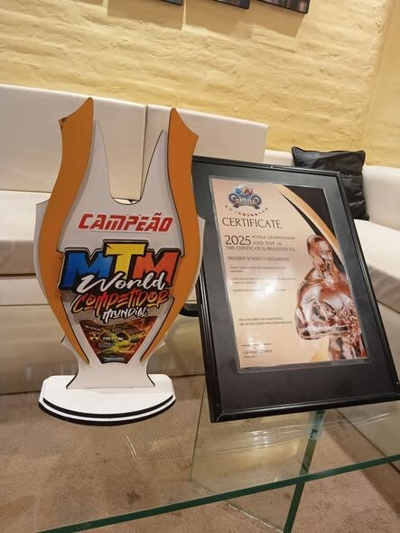
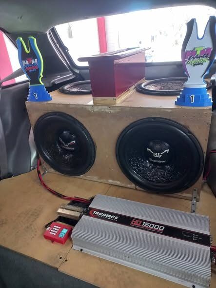
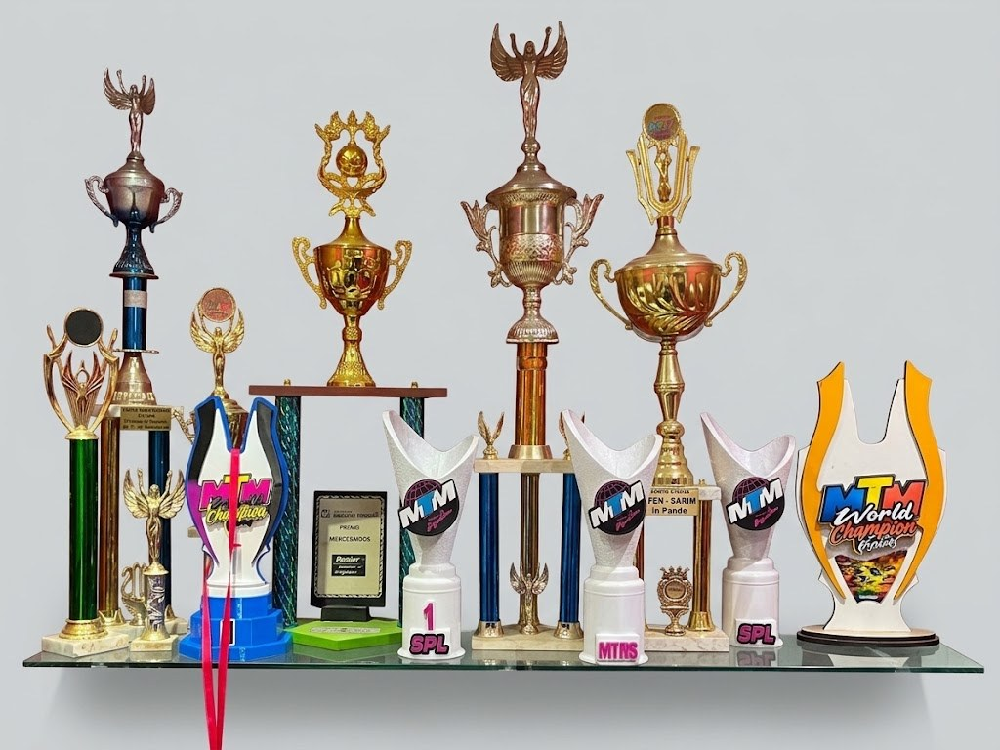
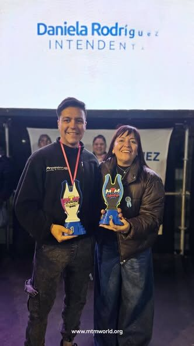
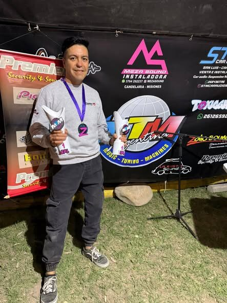
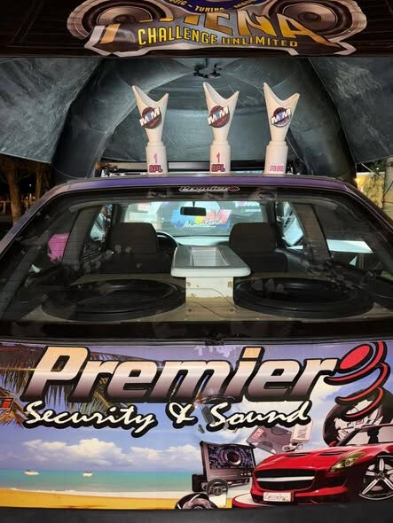
Un taller, Toda la magia en tu auto
En Premier no tercerizamos: el mismo equipo que arma el sistema de audio es el que te diagnostica la alarma y el que te destraba el levantavidrios. Eso significa menos vueltas para vos y un trabajo que se entiende de punta a punta.
Trabajamos con marcas reconocidas porque un equipo bueno mal instalado rinde igual que uno malo — la instalación es la mitad del resultado.
Un QR, directo al taller
Pegalo en el local o compartilo en redes. Al escanearlo se abre WhatsApp con un mensaje listo para consultar.
Descargar QR¿Le hacemos algo a tu auto?
Escribinos y reserva tu turno, no te quedes con las ganas.
Escribinos por WhatsApp ★ Dejanos tu reseña en Google